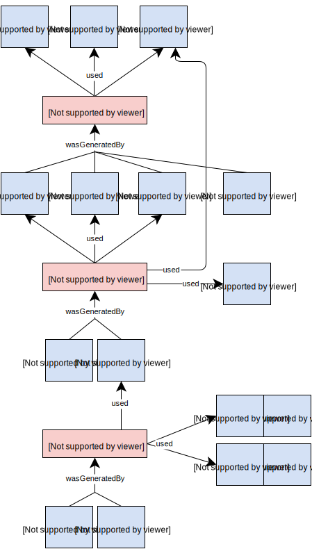

In neuroimaging the typical analysis approach is a “mass univariate”, where a univariate model is independently fit to each voxel (volume element) in parallel. This approach can be applied to a large range of datasets including: functional MRI, anatomical MRI (with Voxel-Based Morphometry), PET, EEG and MEG data.
The three major software analysis package for neuroimaging: SPM (Statistical Parametric Mapping) and FSL (FMRIB Software Library) and AFNI (AFNI) provide implementations of mass univariate analyses. While there are many commonalities across software packages, there are also software-specific outputs that can be of interest for the end-user.
This document describes the encoding of results of a mass univariate neuroimaging analysis using the NIDM data model ([[!KEATORNI13]]). The goal of this specification is to provide a unified representation of neuroimaging results across analysis software. When a piece of information is only available in a specific software, software-specific extensions are provided.
NIDM-Results is a part of NIDM as depicted in .
NIDM-Results as part of NIDM.
NIDM Family of Documents
This document is part of the NIDM family of documents.
Please Send Comments
This document was published by the NIDASH NIDM Working Group as a Candidate Release. If you wish to make comments regarding this document, please report using the NIDM issue tracker or send them to incf-nidash-nidm@googlegroups.com. All comments are welcome.
Introduction
NIDM-Results is
a
NIDM compliant structured representation of the results of a massively univariate neuroimaging study.
NIDM-Results specification formally describes the encoding of the massively univariate neuroimaging results into a NIDM representation. Extensions are provided to describe software-specific objects for SPM (Statistical Parametric Mapping) and FSL (FMRIB Software Library) analysis software.
Structure of this Document
Section 2 provides an overview of NIDM-Results, distinguishing a core set of types and relations, commonly found in provenance, from extended structures catering for more specific uses. It also introduces a modular organization of the data model in components.
Section 3 illustrates how NIDM-Results can be used to express the results of a neuroimaging study in SPM and FSL.
Section 4 provides the definitions (and examples) of NIDM-Results concepts, structured according to three components.
Notational Conventions
The key word
"OPTIONAL" in this document is to be interpreted as described in
[RFC2119].
Examples throughout this document use the PROV-N Provenance
Notation, specified in a separate document [[prov-n]].
Namespaces
The following namespaces prefixes are used throughout this document.
Table 1: Prefix and Namespaces used in this specification
prefix
namespace IRI
definition
nidm
http://www.incf.org/ns/nidash/nidm#
The NIDM namespace
prov
http://www.w3.org/ns/prov#
The PROV namespace [[prov-dm]]
xsd
http://www.w3.org/2000/10/XMLSchema#
XML Schema Namespace [[XMLSCHEMA11-2]]
(others)
(various)
All other namespace prefixes are used in examples only. In particular, IRIs starting with "http://example.com" represent some application-dependent IRI [[RFC3987]]
Overview
This section introduces neuroimaging results concepts with informal explanations and illustrative examples (e.g. see SPM results). NIDM-Results distinguishes software-agnostic structures, forming the essence of the results, from software-specific structures catering for more specific uses of results by different analysis software. Core and extended structures are respectively presented in Section 2.1 and Section 2.2.
Domain covered by NIDM-Results
NIDM-Results is concerned with the modelling of model fitting and inference in the context of massively univariate analyses. A typical example is the analysis of functional MRI data but studies involving other modalities (such as PET) and sequences (e.g. anatomical MRI through VBM) can also be modelled. The domain covered by NIDM-Results data model is represented in .
Domain overview
NIDM-Results Core Structures
The concepts found in the core of NIDM-Results are introduced in the rest of this section.
Overview
The core NIDM-Results structures are presented in . NIDM-Results has three main activities: nidm:'Model Parameters Estimation', nidm:'Contrast Estimation' and nidm:'Inference'. Each activity along with its inputs and outputs are presented in details in the following sections , and .

Core structures overview. Color-coding indicates prov:type (blue: prov:Entity, red: prov:Activity, green:prov:agent).
Re-use of PROV-DM Structures
PROV relations used in NIDM-Results are summarized in Table 2.
This section describes the NIDM-Results entity and introduces general neuroimaging concepts with definitions and illustrative examples. These concepts are shared with other NIDM specifications.
nlx:'SPM': Software package for the analysis of brain imaging data sequences. The sequences can be a series of images from different cohorts, or time-series from the same subject. The current release is designed for the analysis of fMRI, PET, SPECT, EEG and MEG.
rdfs:label: (OPTIONAL) Human readable description of the nlx:'SPM'.
nidm:'software Version': (OPTIONAL) Name and number that specifies the software version. For SPM, this includes the main software version followed by the revision number (e.g. 8.6225 for SPM8 revision 6225). (range xsd:string).
nlx:'FSL'
nlx:'FSL': A comprehensive library of image analysis and statistical tools for fMRI, MRI and DTI brain imaging data. The tools include registration, atlases, Diffusion MRI tools for parameter reconstruction and probabilistic taractography, and a viewer. FSL runs on Apple and PCs (Linux and Windows), and is very easy to install. Most of the tools can be run both from the command line and as GUIs ('point-and-click' graphical user interfaces). Several complementary brain atlases, integrated into FSLView and Featquery, allowing viewing of structural and cytoarchitectonic standard space labels and probability maps for cortical and subcortical structures and white matter tracts. Atlases included with FSL: * Harvard-Oxford cortical and subcortical structural atlases * Julich histological atlas * JHU DTI-based white-matter atlases * Oxford thalamic connectivity atlas * Talairach atlas * MNI structural atlas * Cerebellum atlas FSL is written mainly by members of the Analysis Group, FMRIB, Oxford, UK.
nidm:'software Version': (OPTIONAL) Name and number that specifies the software version. For SPM, this includes the main software version followed by the revision number (e.g. 8.6225 for SPM8 revision 6225). (range xsd:string).
nidm:'NIDM-Results'
nidm:'NIDM-Results': NIDM Object model representing the results of a mass univariate neuroimaging study and targeting the application of meta-analysis. The specification is available at: http://nidm.nidash.org/specs/nidm-results.html.
rdfs:label: (OPTIONAL) Human readable description of the nidm:'NIDM-Results'.
nidm:'Map'
nidm:'Map': Ordered set of values corresponding to the discrete sampling of some process (e.g. brain MRI data measured on a regular 3D lattice; or brain cortical surface data measured irregularly over the cortex).
nidm:'Coordinate Space': An entity with spatial attributes (e.g., dimensions, units, and voxel-to-world mapping) that provides context to a Map (e.g., a Statistic Map, a Contrast Map...).
nidm:'dimensions In Voxels': (OPTIONAL) Number of voxels in each of the dimensions of the data array. For example, "91 109 91" indicates there are 91 voxels in the first dimension, 109 in the second dimension, and 91 in the third dimension. (range xsd:string).
nidm:'voxel Size': (OPTIONAL) 3D size of a voxel measured in voxel units (e.g. [2, 2, 4]). (range xsd:string).
nidm:'voxel To World Mapping': (OPTIONAL) Homogeneous transformation matrix to map from voxel coordinate system to world coordinate system. (range xsd:string).
nidm:'voxel Units': (OPTIONAL) Set of units associated with the dimensions of some N-dimensional data (e.g. [mm, mm, mm]). (range xsd:string).
nidm:'Icbm Mni152 Linear Coordinate System': Reference space which is the average of 152 T1-weighted MRI scans, linearly transformed onto the MNI 305 reference space (definition adapted from: http://www.bic.mni.mcgill.ca/ServicesAtlases/ICBM152Lin). This is the default in SPM99 to SPM8 (cf. MRC CBSU Wiki and spm8/spm_templates.man.
nidm:'Icbm Mni152 Non Linear2009a Asymmetric Coordinate System': Reference space defined as the average of 152 T1-weighted MRI scans, non-linearly transformed to MNI152 linear space (cf. http://www.bic.mni.mcgill.ca/ServicesAtlases/ICBM152NLin2009 for more details).
nidm:'Icbm Mni152 Non Linear2009a Symmetric Coordinate System': Reference space defined as the average of 152 T1-weighted MRI scans, non-linearly transformed to to form a symmetric model in MNI152 linear space (cf. http://www.bic.mni.mcgill.ca/ServicesAtlases/ICBM152NLin2009 for more details).
nidm:'Icbm Mni152 Non Linear2009b Asymmetric Coordinate System': Reference space defined as the average of 152 T1-weighted MRI scans in high-resolution, non-linearly transformed to MNI152 linear space (cf. http://www.bic.mni.mcgill.ca/ServicesAtlases/ICBM152NLin2009 for more details).
nidm:'Icbm Mni152 Non Linear2009b Symmetric Coordinate System': Reference space defined as the average of 152 T1-weighted MRI scans in high-resolution, non-linearly transformed to form a symmetric model in MNI152 linear space (cf. http://www.bic.mni.mcgill.ca/ServicesAtlases/ICBM152NLin2009 for more details).
nidm:'Icbm Mni152 Non Linear2009c Asymmetric Coordinate System': Reference space defined as the average of 152 T1-weighted MRI scans, non-linearly transformed to MNI152 linear space using the N3 algorithm (cf. http://www.bic.mni.mcgill.ca/ServicesAtlases/ICBM152NLin2009 for more details).
nidm:'Icbm Mni152 Non Linear2009c Symmetric Coordinate System': Reference space defined as the average of 152 T1-weighted MRI scans, non-linearly transformed to form a symmetric model in MNI152 linear space using the N3 algorithm (cf. http://www.bic.mni.mcgill.ca/ServicesAtlases/ICBM152NLin2009 for more details). This is the default for DARTEL toolbox in SPM12b (cf. spm12/spm_templates.man).
nidm:'Icbm Mni152 Non Linear6th Generation Coordinate System': Reference space defined as the average of 152 T1-weighted MRI scans, linearly and non-linearly (6 iterations) transformed to form a symmetric model in Talairach space (cf. http://www.bic.mni.mcgill.ca/ServicesAtlases/ICBM152NLin6).
nidm:'Icbm452 Air Coordinate System': Reference space defined as the average of 452 T1-weighted MRIs of normal young adult brains after 12 parameter AIR linear transform to the MNI 305 space (cf. http://www.loni.usc.edu/ICBM/Downloads/Downloads_452T1.shtml and http://imaging.mrc-cbu.cam.ac.uk/imaging/MniTalairach).
nidm:'Icbm452 Warp5 Coordinate System': Reference space defined as the average of 452 T1-weighted MRIs of normal young adult brains after affine and 5 order polynomial non-linear warping to the MNI 305 space (cf. http://www.loni.usc.edu/ICBM/Downloads/Downloads_452T1.shtml and http://imaging.mrc-cbu.cam.ac.uk/imaging/MniTalairach).
nidm:'Ixi549 Coordinate System': Reference space defined by the average of the 549 subjects from the IXI dataset linearly transformed to the ICBM MNI 452 (cf. spm12/spm\_templates.man and http://biomedic.doc.ic.ac.uk/brain-development/index.php?n=Main.Datasets). This is the default in SPM12 (cf. spm12/spm_templates.man).
nidm:'Mni305 Coordinate System': Reference space defined as the average of 305 T1-weighted MRI scans, linearly transformed to Talairach space (cf. http://www.bic.mni.mcgill.ca/ServicesAtlases/MNI305 for more details).
nidm:'Talairach Coordinate System'
nidm:'Talairach Coordinate System': Reference space defined by the dissected brain used for the Talairach and Tournoux atlas (cf. http://www.talairach.org/about.html).
nidm:'Colin27 Coordinate System': Reference space defined as the stereotaxic average of 27 T1-weighted MRI scans of the same individual transformed into the Talairach stereotaxic space (cf. http://www.bic.mni.mcgill.ca/ServicesAtlases/Colin27Highres and http://neuro.debian.net/pkgs/mni-colin27-nifti.html). This is the default in SPM96 (cf. MRC CBSU Wiki.
rdfs:label: (OPTIONAL) Human readable description of the nidm:'Data Scaling'.
nidm:'grand Mean Scaling': (OPTIONAL) Binary flag defining whether the data was scaled (true for scaled). Specifically, "grand mean scaling" refers to multiplication of every voxel in every scan by a common (or session-specific) value. (range xsd:boolean).
nidm:'target Intensity': (OPTIONAL) Value to which the grand mean of the Data was scaled (applies only if grand mean scaling is true). (range xsd:float).
nidm:'regressor Names': (OPTIONAL) A list of abstract names associated with each column of the design matrix (e.g. ["motor_left", "motor_right"]). (range xsd:string).
nidm:'Finite Impulse Response Basis Set': Set of Finite impulse response (FIR) filters, with FIR the convolution kernel is represented as a set of discrete fixed-width "impulses" (definition adapted from FSL wiki.
fsl:'FSL's Temporal Derivative': Hemodynamic response function basis that is the derivative with respect to time of the FSL's Gamma Difference heamodynamic response function.
spm:'SPM's Dispersion Derivative': Hemodynamic response function basis that is the derivative with respect to spatial dispersion of the SPM's Canonical heamodynamic response function.
spm:'SPM's Temporal Derivative': Hemodynamic response function basis that is the derivative with respect to time of the SPM's Canonical heamodynamic response function.
nidm:'Hemodynamic Response Function'
nidm:'Hemodynamic Response Function': Hemodynamic response function basis that can on its own be used to represent the idealised hemodynamic response function.
fsl:'FSL's Gamma Difference HRF': Hemodynamic response function which is a fixed difference of two gamma probability density functions - a standard positive function at normal lag, and a small, delayed, negated gamma probability density function, which attempts to model the late undershoot (definition adapted FSL wiki. This is the default in FSL.
spm:'SPM's Canonical HRF': Hemodynamic response function which is a fixed difference of two gamma probability density functions and is denoted by "canonical HRF" in SPM. This is the default in SPM.
nidm:'Gamma HRF'
nidm:'Gamma HRF': Hemodynamic response function which is a gamma probability density function.
rdfs:label: (OPTIONAL) Human readable description of the nidm:'Gaussian HRF'.
nidm:'Linear Spline Basis Set'
nidm:'Linear Spline Basis Set': A Linear (order 1) spline, providing an estimate that is continuous over time (in contrast to a FIR basis, which is discontinuous between each time bin). This is called TENT in AFNI's 3dDeconvolve program.
fsl:'Gaussian Running Line Drift Model': A drift model in which the drifts are modeled with a Gaussian-weighted running line smoother, fit to and subtracted from the data and each column of the design matrix.
fsl:'drift Cutoff Period': (OPTIONAL) Full Width at Half Maximum in seconds of the Gaussian weight function used in the running line smoother. (range xsd:float).
spm:'DCT Drift Model'
spm:'DCT Drift Model': A drift model in which the drifts are modeled by a Discrete Cosine Transform basis added to regression model.
spm:'SPM's Drift Cut-off Period': (OPTIONAL) Discrete Cosine Transform basis cut-off, specified as period length in seconds and ensures that all basis elements will have period of this duration or longer. (range xsd:float).
nidm:'fMRI Design Type'
nidm:'fMRI Design Type': The type of stimulus presentation used in the data acquisition, one of block-based design event-related design or mixed design.
nidm:'Mixed Design': An fMRI design comprised of both epochs & discrete events of stimulus and/or behavior.
nidm:'Error Model'
nidm:'Error Model': Model used to describe the random variation of the error term as part of parameter estimation, including specification of the error probability distribution, its variance and dependence both spatially and across observations.
nidm:'error Variance Homogeneous': (OPTIONAL) A boolean value reflecting how the variance of the error is modeled during parameter estimation; TRUE for constant variance over all observations in the model, FALSE for heterogeneous variance. (range xsd:boolean).
nidm:'Binomial Distribution': The binomial distribution is a discrete probability distribution which describes the probability of k successes in n draws with replacement from a finite population of size N. The binomial distribution is frequently used to model the number of successes in a sample of size n drawn with replacement from a population of size N. The binomial distribution gives the discrete probability distribution of obtaining exactly n successes out of N Bernoulli trials (where the result of each Bernoulli trial is true with probability p and false with probability q=1-p ) notation: B(n,p) The mean is N*p The variance is N*p*q. (Definition from STATO).
nidm:'Gaussian Distribution': A normal distribution is a continuous probability distribution described by a probability distribution function described here: http://mathworld.wolfram.com/NormalDistribution.html (Definition from STATO).
nidm:'Non Parametric Distribution': Probability distribution estimated empirically on the data without assumptions on the shape of the probability distribution.
nidm:'Poisson Distribution': Poisson distribution is a probability distribution used to model the number of events occurring within a given time interval. It is defined by a real number (λ) and an integer k representing the number of events and a function. The expected value of a Poisson-distributed random variable is equal to λ and so is its variance. (Definition from STATO).
nidm:'Error Parameter Map-Wise Dependence': Map-wise dependence structure of a parameter in the error model (i.e. variance or dependence parameter). For example, whether a temporal autocorrelation parameter is estimated at each element separately, estimated using data in a local neighbourhood, or estimated using all elements in the map.
nidm:'Grand Mean Map': A map whose value at each element (e.g., pixel, voxel, vertex, or face) is the mean over all observations of that element in the input maps (after any scaling of those input maps).
nidm:'masked Median': (OPTIONAL) Median value considering only in-mask voxels. Useful diagnostic when computed on grand mean image when grandMeanScaling is TRUE, as the median should be close to targetIntensity. (range xsd:float).
nidm:'Mask Map': A binary map representing the exact set of elements (e.g., pixels, voxels, vertices, and faces) in which an activity was performed (e.g. the mask map generated by the model parameter estimation activity represents the exact set of voxels in which the mass univariate model was estimated) and/or restraining the space in which an activity was performed (e.g. the mask map used by inference).
nidm:'is User Defined': (OPTIONAL) A binary flag defining whether the mask was specified by the user (true) or automatically generated during the analysis (false). (range xsd:boolean).
nidm:'noise FWHM In Vertices': (OPTIONAL) Estimated Full Width at Half Maximum of the spatial smoothness of the noise process in vertices.
obo:'contrast weight matrix': A contrast weight matrix is a information content entity which holds a set of contrast weight, coefficient used in a weighting sum of means defining a contrast.
nidm:'Contrast Explained Mean Square Map': A map whose value at each element (e.g., pixel, voxel, vertex, or face) is the extra sum of squares divided by the effect degrees of freedom (i.e. the denumerator of an F-statistic).
nidm:'effect Degrees Of Freedom': (OPTIONAL) In the context of a general linear model, the effect degrees of freedom is the rank of the contrast. For example, a contrast comprising of a vector has effect degrees of freedom of 1 and can be tested with a F-test with numerator degrees of freedom of 1. (range xsd:float).
nidm:'error Degrees Of Freedom': (OPTIONAL) In the context of a general linear model, the error degrees of freedom are the number of observations less the rank of the design matrix. (range xsd:float).
nidm:'Inference': Statistical inference is a process of drawing conclusions following data analysis using statistical methods (statistical tests) and evaluating whether to reject or accept null hypothesis. (definition from STATO).
nidm:'Conjunction Inference': Statistically testing for the joint significance of multiple effects, with emphasis on rejecting all (instead of one or more) of the respective null hypotheses.
spm:'Partial Conjunction Inference': The process of testing the joint significance of multiple effects to infer that some (not necessarily all) of the respective effects are real (i.e. their null hypotheses are false). If there are K effects considered, the partial conjunction degree u is the number non-null effects allowed as part of partial conjunction null hypothesis; if the partial conjunction null is rejected, it may be inferred that u+1 or more effects are real. The case of u=K-1 corresponds to proper "conjunction inference", while the case of u=0 corresponds to "global null" conjunction test. See Friston et al. (2005). Conjunction revisited. NeuroImage, 25(3), 661-7..
spm:'partial Conjunction Degree': (OPTIONAL) The number of non-null effects permitted in a partial conjunction null, as part of a partial conjunction inference. (range xsd:int).
nidm:'Cluster Definition Criteria'
nidm:'Cluster Definition Criteria': Set of criterion specified a priori to define the clusters reported after inference (e.g. pixel or voxel connectivity criterion).
nidm:'Pixel Connectivity Criterion': The criterion used to characterize two pixels as 'connected'. In two dimensions voxels that are connected can share an edge (4-connected) or, edge or corner (8-connected).
nidm:'pixel8connected': A pair of pixels are 8-Connected if they share an edge or corner.
nidm:'Voxel Connectivity Criterion'
nidm:'Voxel Connectivity Criterion': The criterion used to characterize two voxels as 'connected'. In three dimensions voxels that are connected can share a voxel face (6-connected), face or edge (18-connectec), or face, edge, or corner (26-connected).
nidm:'Cluster Labels Map': A map whose value at each element (e.g., pixel, voxel, vertex, or face) denotes cluster membership within the excursion set. Each cluster is denoted by a different integer and all members of the same cluster have the same value.
rdfs:label: (OPTIONAL) Human readable description of the nidm:'Coordinate'.
nidm:'coordinate Vector': (OPTIONAL) A vector with one number per dimension. The first element corresponds to the coordinate along the first dimension measured in map elements (e.g., pixels, voxels, vertices, or faces), the second element to the coordinate along the second dimension etc. (range xsd:string).
nidm:'coordinate Vector In Voxels': (OPTIONAL) Coordinate along the first dimension in voxels. (This definition needs to be re-worked as this term was renamed from coordinate1 to coordinate in https://github.com/incf-nidash/nidm/issues/270). (range xsd:string).
nidm:'Display Mask Map': A binary map used by an activity that changed the voxels displayed, but did not alter the space in which the activity was performed (e.g. at the level of inference, this mask is called "contrast masking" in both FSL & SPM and does not alter voxel-wise corrected p-values).
nidm:'is User Defined': (OPTIONAL) A binary flag defining whether the mask was specified by the user (true) or automatically generated during the analysis (false). (range xsd:boolean).
nidm:'Excursion Set Map': A map in which the set of elements (e.g., pixels, voxels, vertices, or faces) not selected by the inference activity is set to zero or NaN.
nidm:'Extent Threshold': A numerical value that establishes a lower bound on cluster-sizes and can be specified by the user in terms of FWER-corrected p-value, uncorrected p-value or minimum cluster size in voxels.
nidm:'Threshold': A numerical value that establishes a bound on a set of statistic values and can be specified by the user in terms of FWER-corrected p-value, uncorrected p-value, FDR-corrected q-value or statistic value.
nidm:'Height Threshold': A numerical value that establishes a lower bound on statistic values and can be specified by the user in terms of FWER-corrected p-value, uncorrected p-value or minimum statistic value.
nidm:'Peak': A map element (e.g., pixel, voxel, vertex, or face) which is a local maximum in the significant cluster and complies with the peak definition criteria.
rdfs:label: (OPTIONAL) Human readable description of the nidm:'Peak'.
nidm:'equivalent ZStatistic': (OPTIONAL) Statistic value transformed into Z units; the output of a process which takes a non-normal statistic and transforms it to an equivalent z score. (range xsd:float).
nidm:'p Value FWER': (OPTIONAL) "A quantitative confidence value resulting from a multiple testing error correction method which adjusts the p-value used as input to control for Type I error in the context of multiple pairwise tests". (range xsd:float).
nidm:'q Value FDR': (OPTIONAL) A quantitative confidence value that measures the minimum false discovery rate that is incurred when calling that test significant. To compute q-values, it is necessary to know the p-value produced by a test and possibly set a false discovery rate level (same as OBI_0001442). (range xsd:float).
nidm:'Peak Definition Criteria': Set of criterion specified a priori to define the peaks reported after inference (e.g. maximum number of peaks within a cluster, minimum distance between peaks).
nidm:'Search Space Mask Map': A mask map representing the set of elements (e.g., pixels, voxels, vertices, or faces) in which the inference was performed.
nidm:'is User Defined': (OPTIONAL) A binary flag defining whether the mask was specified by the user (true) or automatically generated during the analysis (false). (range xsd:boolean).
nidm:'random Field Stationarity': (OPTIONAL) A binary flag that indicates whether Random Field Theory methods assumed smoothness that was homogeneous over the map (true), or allowed for smoothness that varies over the map (false). (range xsd:boolean).
nidm:'search Volume In Units': (OPTIONAL) The volume of the searched region in units determined by the current coordinate space units (e.g., mm^3 for axis units of mm in a three dimensional image, sec.Hz for a time by frequency two dimensional image). (range xsd:float).
nidm:'noise Roughness In Voxels': (OPTIONAL) Estimated spatial roughness of the noise process in voxel units, as measured by the square-root determinant of the variance-covariance matrix of spatial derivatives of the noise process (Lambda matrix). (range xsd:float).
nidm:'noise FWHM In Units': (OPTIONAL) Estimated Full Width at Half Maximum of the spatial smoothness of the noise process in world units (e.g. mm^2 or mm^3, in subject or atlas space). (range xsd:string).
nidm:'noise FWHM In Vertices': (OPTIONAL) Estimated Full Width at Half Maximum of the spatial smoothness of the noise process in vertices.
nidm:'noise FWHM In Voxels': (OPTIONAL) Estimated Full Width at Half Maximum of the spatial smoothness of the noise process in voxels. (range xsd:string).
spm:'search Volume Resels Geometry': (OPTIONAL) Description of geometry of search volume. As per Worsley et al. [ http://www.ncbi.nlm.nih.gov/pubmed/20408186 ], for space dimension 3 the first element is the Euler Characteristic of the search volume, the second element is twice the average caliper diameter, the third element is half the surface area, and the fourth element is the volume. With the exception of the first element (which is a unitless integer) all quantities are in units of Resels. (range xsd:string).
nidm:'Significant Cluster': A cluster of map elements (e.g., pixels, voxels, vertices, and faces) that were selected by the inference activity and are contiguous according to the cluster connectivity criteria.
nidm:'cluster Label Id': (OPTIONAL) Integer value used in the cluster label map to identify the location of the cluster within the excursion set. (range xsd:int).
nidm:'p Value FWER': (OPTIONAL) "A quantitative confidence value resulting from a multiple testing error correction method which adjusts the p-value used as input to control for Type I error in the context of multiple pairwise tests". (range xsd:float).
nidm:'q Value FDR': (OPTIONAL) A quantitative confidence value that measures the minimum false discovery rate that is incurred when calling that test significant. To compute q-values, it is necessary to know the p-value produced by a test and possibly set a false discovery rate level (same as OBI_0001442). (range xsd:float).